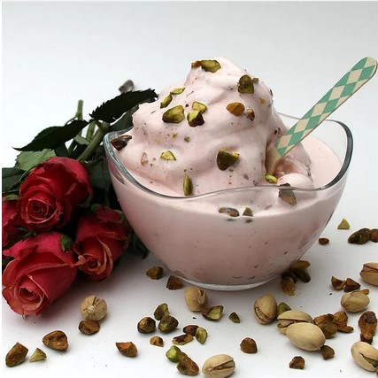

Ice Cream

Go on, indulge yourself with this exotic combination of rose and saffron. Serve this ice cream for dessert to your guests next time you host a party and wow them! Cashews and almonds also go well with this ice cream.
Ingrediants
- 1 pinch saffron
- 2 tablespoons warm milk
- 1 ½ quarts vanilla ice cream, softened
- 1 ½ tablespoons rose syrup
- ½ teaspoon ground cardamom
- ¼ cup chopped pistachio nuts
Steps
Step 1
- Add the saffron to the warm milk and set aside for 15 minutes.
Step 2
- Combine the softened ice cream, saffron with milk, rose syrup, cardamom, and pistachios in a large bowl.
Step 3
- Stir until the ice cream is smooth and pink in color. Scoop the ice cream back into the container and freeze 2 hours, or until ready to eat.
Click Here to see more recipes